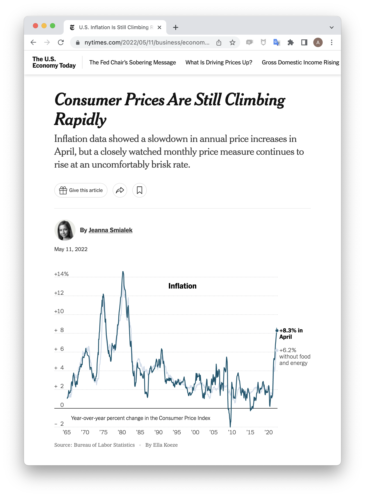
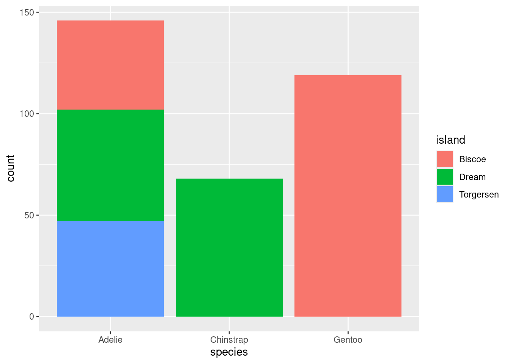
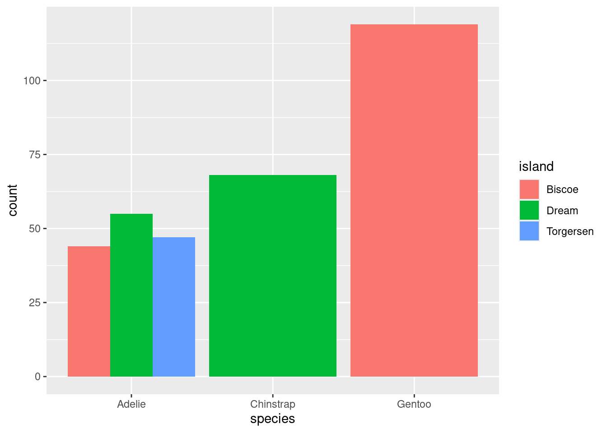
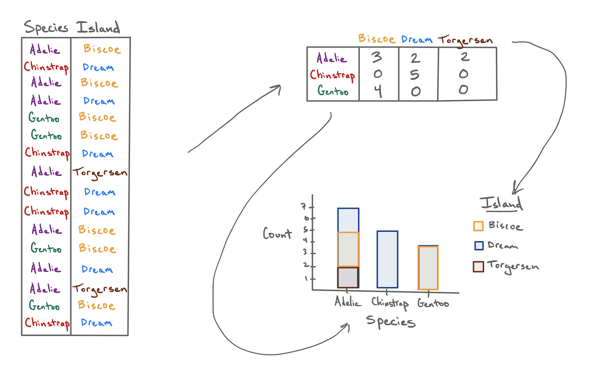
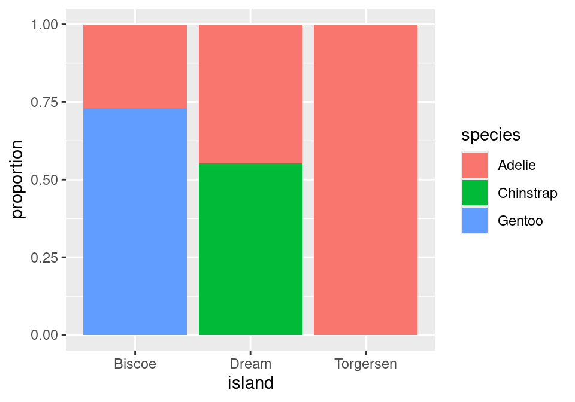
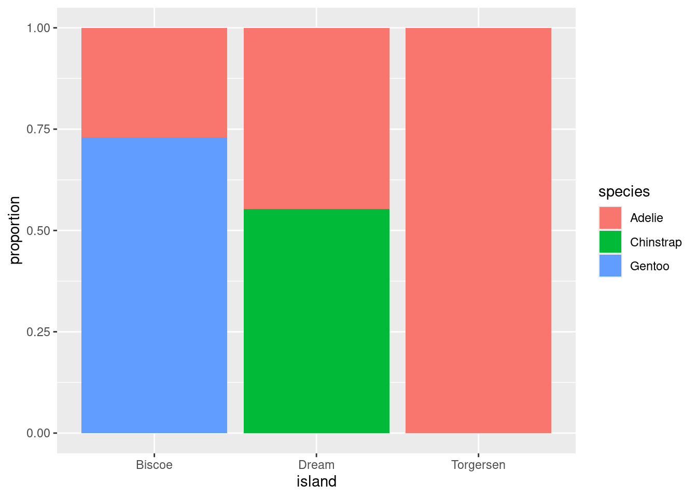
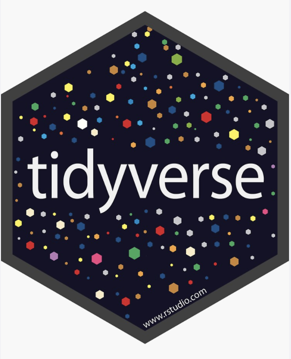
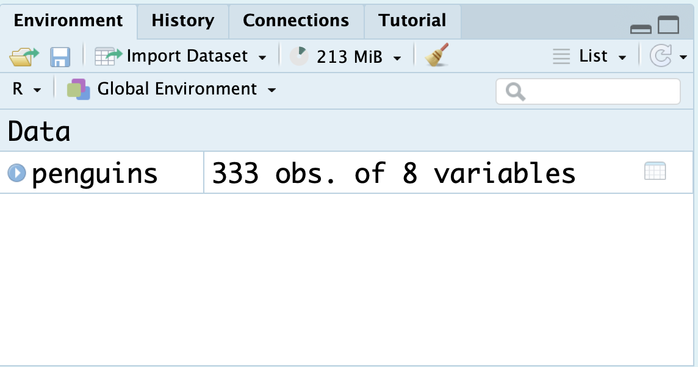
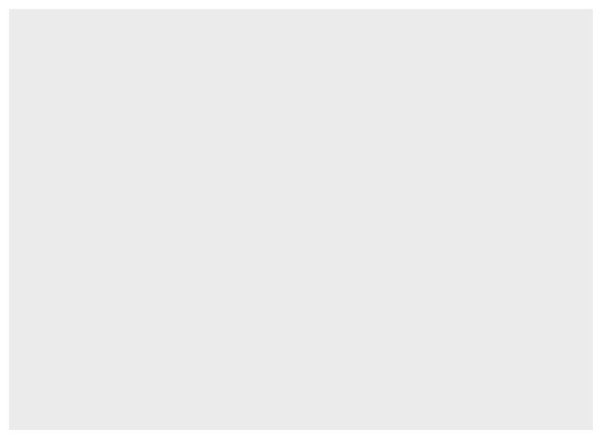

# A tibble: 333 × 8
species island bill_length_mm bill_depth_mm flipper_length_mm body_mass_g
<fct> <fct> <dbl> <dbl> <int> <int>
1 Adelie Torgersen 39.1 18.7 181 3750
2 Adelie Torgersen 39.5 17.4 186 3800
3 Adelie Torgersen 40.3 18 195 3250
4 Adelie Torgersen 36.7 19.3 193 3450
5 Adelie Torgersen 39.3 20.6 190 3650
6 Adelie Torgersen 38.9 17.8 181 3625
7 Adelie Torgersen 39.2 19.6 195 4675
8 Adelie Torgersen 41.1 17.6 182 3200
9 Adelie Torgersen 38.6 21.2 191 3800
10 Adelie Torgersen 34.6 21.1 198 4400
# ℹ 323 more rows
# ℹ 2 more variables: sex <fct>, year <int>Summarizing Categorical Data
From data frames to tables. From tables to bar charts.
Welcome to Unit I: Summarizing Data
In spring of 2022, the New York Times ran the following story1.

“Consumer Prices” refers to the Consumer Price Index2, a weighted average of the prices of thousands of everyday consumer goods: sports equipment, soft drinks, sneakers, internet service, etc. An increase in that index is thought to correspond to rising inflation.
Look carefully at the line plot. Which of the following four claims does it support?
- The CPI rose 8.3% in April, 2022.
- The CPI will likely rise throughout the summer of 2022.
- The global consumer price index rose in April, 2022.
- The CPI rose 8.3% because of the war in Ukraine.
In truth, this plot could be consistent with all these claims. They are, in turn, a summary, a prediction, a generalization, and a causal claim. This newspaper headline falls squarely in the first category, a summary, which seeks only to describe the data set that is on hand.
Although 8.3% seems like a simple enough number, it is actually summarizing a vast data set of thousands of prices. The process of describing a data set invariably involves summarizing it, either with numerical summaries like 8.3% or with graphical summaries like the line plot show above.
In this unit, we will learn to critique and construct descriptive claims made with data. Although they sound elementary, descriptive claims are the most common form of claim made using data. They have the power to move, if not mountains, at least markets.

Summarizing Categorical Data
The tools for calculating numerical summaries and graphical summaries can be cleanly divided between tools developed for categorical data and tools for numerical data. We’ll discuss each in turn, starting with categorical data.
When Dr. Gorman collected data near Palmer Station, Antarctica, she recorded a total of eight variables on 333 penguins, presented here in a data frame.
The first two of these you’ll recognize as nominal categorical variables. The species of each penguin can take one of three levels: Adelie, Chinstrap, or Gentoo; and the island on which they were found can also take three levels: Biscoe, Dream, or Torgersen.
Contingency tables
If I asked you to look at this data frame and describe what these two variables show, that’s a surprisingly difficult task! The raw data frame has simply too much information to process at a glance. To make it easier, we need to consolidate all of that information into a few numerical summaries. Since these variables don’t take numbers as values, we can’t take an average or a median. What we can do, though, is simply count up the number of penguins that appeared in every combination of levels and lay them out in a table like this:
| Biscoe | Dream | Torgersen | |
|---|---|---|---|
| Adelie | 44 | 55 | 47 |
| Chinstrap | 0 | 68 | 0 |
| Gentoo | 119 | 0 | 0 |
After a few moments of looking at this table, a few features emerge:
- The Chinstrap penguins were only found on Dream island.
- Adelie penguins are the most common.
- The most prevalent penguin type in this data set was a Gentoo from Biscoe Island.
This method of displaying data is called a contingency table.
- Contingency table
- A table that shows the counts or frequencies of observations that occur in every combination of levels of two categorical variables. Used to display the relationship between variables.
We can also opt to present these counts in graphical form by constructing a bar chart. There are two common methods for laying out counts across two variables in a bar chart.


The stacked bar chart puts one of the variables along the x-axis (the species) and fills up the y-axis according to the counts in each level of the other variable (the island). The side-by-side bar chart is similar, but unstacks the “Adelie” bar to put the three islands besides one another.
So with two similar to charts to choose from, which one should you pick? The stacked bar chart succeeds in highlighting the total number of Adelie penguins: 146 (also the sum of the top row of the contingency table). The side-by-side version makes that total harder to see, but it is easier to see at a glance the relative sizes of which islands each of those Adelie penguins came from.

From Counts to Proportions
When you count the number of observations in each level of a categorical variable, you’re encoding the overall magnitude of each. But often what is more important is the relative magnitude of each. We can emphasize this by converting counts into proportions.
| Biscoe | Dream | Torgersen | |
|---|---|---|---|
| Adelie | 44 | 55 | 47 |
| Chinstrap | 0 | 68 | 0 |
| Gentoo | 119 | 0 | 0 |
| Biscoe | Dream | Torgersen | ||
|---|---|---|---|---|
| Adelie | 0.132 | 0.165 | 0.142 | 0.439 |
| Chinstrap | 0.000 | 0.204 | 0.000 | 0.204 |
| Gentoo | 0.357 | 0.000 | 0.000 | 0.357 |
| 0.489 | 0.369 | 0.142 | 1.000 |
The second table contains two different types of proportions that can be found in the middle and margins of the table, respectively.
- Joint Proportion
- The proportion of observations of multiple variables that appear in a combination of levels of those variables. E.g. 44 / 333 = .132, the proportion of all 333 penguins that were Adelie and from Biscoe.
- Marginal Proportion
- The proportion of observations in one variable that appear in a single level of that variable. E.g. (44 + 119) / 333 = .489, the proportion of all penguins that were from Biscoe.
From these proportions we can derive a third type of proportion.
- Conditional Proportion
- The proportion of observations in one level of one variable that appear in a level of a second variable. E.g. .132 / .489 = .269, the proportion of penguins from Biscoe that were Adelie.
These distinctions are important because often a subtle change in language can result in a dramatically different number. Revisit the observations made about the original table of counts:
- The Chinstrap penguins were only found on Dream Island.
- Adelie penguins were the most common.
- The most prevalent penguin type in this data set was a Gentoo from Biscoe Island.
The first observation refers to a conditional proportion: of the 68 total Chinstrap penguins, 68 of them were on Dream (a proportion of 1). The second refers to a marginal proportion: .439 of the penguins were Adelie versus .204 Chinstrap and .357 Gentoo. The third is a joint proportion: .357, or 124 out of all 333 penguins were Gentoos living on Biscoe.
With these distinctions in hand, we can construct a useful variant of the bar chart: the normalized stacked bar chart.

Instead of plotting raw counts, a normalized bar chart plots proportions. But which proportions?
If you look back and forth between this bar chart and the table of proportions, you’ll eventually decide that this bar chart is showing conditional proportions. The height of the blue bar in the lower left corner indicates the proportion of all Adelie penguins that were from Torgersen: 47 / 146 = .322. Since species is in the denominator of this proportion, we say that we’ve “conditioned on” species.
We can take the same data and get a very different story if instead we condition on island.

Now, the height of the blue bar in the lower left of the plot shows the proportion of penguins from Biscoe that were Gentoo: 119 / 163 = .730.
One last question before we move on: of these two charts, which one more clearly shows the species distribution on Dream Island? Dream shows up in both charts, but only one gives you a good answer to this question.
The answer to this question comes from the second chart. Here the species breakdown on Dream is clearly shown in the middle bar: a bit more than half are Chinstrap, the rest are Adelie. Trying to pry this information out of the first chart is actually impossible! When we conditioned on species, we lost the relative numbers of Chinstraps and Adelies - where they found in equal numbers or were there 100 Chinstraps for every Adelie? That information can’t be back-engineered from the first chart, and without it, we can’t reconstruct the distribution as seen in the middle bar of the second chart.
The lesson from this is powerful: if you wish to make a claim rooted in a conditional proportion and are using a normalized bar chart, it is essentially to think carefully about which conditional proportion your chart is displaying.
Identifying an association
Is there an association between species and which island they are found on? With a clearer sense of proportions under our belt, we can define this more precisely.
- Association
- There is an association between two categorical variables if the conditional proportions vary as you move from one one level of the conditioning variable to the next.
This is best illustrated by showing the previous plot of the real data right next to an example of what a penguins data set would look like that exhibits no association between species and island.


In plot on the right, as you gaze from left to right, looking across first Biscoe, then Dream, then Torgersen Islands, you see that the distribution of species is unchanged. There are always the most Gentoos, then Chintraps, then Adelies, regardless of the island. This indicates that there is no association between the variables in this data set.
This stands in stark contrast to the plot of the real data on the left. On Biscoe Island, Gentoo penguins dominate, with a smaller proportion of Adelies. Chinstraps are nowhere to be found. On Dream Island, its the Gentoos that are absent and we find roughly similar proportions of Chinstraps and Adelies. On Torgersen we observed only Adelies. This data set exhibits a strong association between species and island.
The Ideas in Code
Help and Arguments
Every function in R has a built-in help file that tells you about how it works. It can be accessed using ?.
?meanThis will pop up the help file in a tab next to your Files tab in the lower right hand corner of RStudio. In addition to describing what the function does, the help file lists out the function’s arguments. Arguments are the separate pieces of input that you can supply to a function and they can be named or unnamed.
In Taxonomy of Data, we created a vector called my_fav_numbers and then calculated its mean using the mean() function.
In the second command that we entered above, we used a single unnamed argument, my_fav_numbers. We could have alternatively written this with a named argument:
mean(x = my_fav_numbers)[1] 16.75As the help file suggests, x is the R object (here a vector of numbers) that you want to take the mean of. You can always pass objects to a function as named arguments, or if you want to be more concise, you can pass it unnamed and R will rely on the order to figure things out.

mean().
To test how this actually works, let’s add a second unnamed argument to our function. From reading the help file, you learn that you can supply it a trim argument to trim off some percent of the highest and lowest values before computing the mean. The default value of this argument is 0, but we can change this. Let’s trim off 25% from the lower end and 25% from the upper end.
mean(my_fav_numbers, .25)[1] 15It worked! We trim off the 9 and the 28, then take \((11 + 19) / 2 = 15\). We can also write the command using named arguments. The code will be a bit more verbose but the answer will be the same.
mean(x = my_fav_numbers, trim = .25)[1] 15What happens if we use unnamed arguments but change the order? Let’s find out.
mean(.25, my_fav_numbers)Error in mean.default(0.25, my_fav_numbers): 'trim' must be numeric of length oneSince there are no names, R looks at the second argument and expects it to be the a proportion between 0 and .5 that it will use to trim. You have passed it a vector of three integers instead, so it’s justified in complaining.
Libraries

tidyverse library, which contains many useful packages for data scienceIn Taxonomy of Data, we learned about a few different functions that can be used on vectors, such as mean(). We also learned about a function called data.frame(), which allowed us to bring vectors together as part of a new structure called a data frame, with each of the vectors used as columns.
While the base functionality provided by R is powerful, developers often seek to find more efficient ways to complete tasks. In doing so, they push the power of R forward. R has a vast ecosystem of libraries that add new functions. Any installed library can be loaded with the library() function. Here, we will load the tidyverse library, one of the core external libraries that we will be using this semester.
To use these functions within this library (or any other library), you will need to run the above line of code each time you start an RStudio session!
The tidyverse library has many different packages which contain smaller pieces of functionality. Today, our focus is to summarize categorical data, and one avenue we have explored already is a visual summary; a bar chart. Let’s explore how the plots shown earlier in this set of notes were made. We will use ggplot2, tidyverse’s resident visualization package.
First, we should load the penguins data into our environment. The penguins data is actually located in a special library made just for this course called stat20data. This library hosts the datasets which will be the subjects of your labs. Therefore, we need to load this library first.
library(stat20data)Then, we can load in the penguins data by using the aptly named data function.
data(penguins)Once you do this, you will see the penguins dataset, in all of its glory, appear in the environment pane at the top right of your RStudio session (you may need to click in the area once or twice).

You can click the blue dropdown arrow to see each variable in the dataset, or for a more traditional view, you can click the white spreadsheet icon to the right:

Now, we’re ready to write some ggplot2 code and make our first visualization of the year! We will create the exact stacked, normalized bar chart you saw earlier in the notes.
A first visualization with ggplot2
The main function within the ggplot2 package is, well, ggplot().
ggplot(data = penguins)
The ggplot() function takes as its first argument a data frame (the data argument). By itself, there’s not much to look at; it just creates a blank canvas.
Let’s now indicate how we want to map our variables to each area of the plot. For now, let’s just focus on the species of penguin; we’ll handle the island later.
We had species of penguin on the horizontal (x) axis. This piece of information (which is known as an aesthetic attribute of the plot), goes into a second argument called mapping and within a function called aes().
Now we’re getting somewhere. We can see the x axis has been set up with labels for the species of penguins.
All that is left is to actually put the observations on the plot. We do this by declaring what geometry we want and adding this information to our existing code. We can add this information via a new layer, which can be added on by using the + syntax and taking a newline.

The layer we added was a geometry layer corresponding to the bar chart, called geom_bar(). In tomorrow’s notes, you will similarly named geometry layers relating to visualizations for numerical data.
Note that the bars are not colored like before, but are just gray. This is because we are missing the island variable! Island was represented by coloring in (filling) the bars for us according to the conditional proportions of penguins within a specific species belonging to a specific island. We can include this by adding to our aes() function in the original layer.
Almost there! Note that what we have right now is just a stacked bar chart. There’s one more fix that we need to apply. Note that geom_bar() can be thought of as a function as well. One of its arguments, position, will help us solve this issue3. position defaults to a stacked bar chart, but we can fix this by supplying it with "fill"!

A side-by-side (dodged) by chart can be produced by replacing "fill" with "dodge". To recover the original, stacked bar chart, use "stack"!
There we have it! Looking forward:
- In our very next lecture, you’ll learn how to use
ggplot2to make visualizations of numerical variables. - We will also learn more about the machinery behind
ggplot2through a dedicated lecture in a couple of weeks.
Summary
A wise statistician once said, “In statistics, most of what we do is add things up. Sometimes we divide. The challenging part is deciding what to add and divide.” This captures the deceptive simplicity of summarizing categorical data. Categorical summaries involve counts of categories or proportions. Those proportions can be joint proportions, marginal proportions, or conditional proportions. Those counts and proportions are commonly displayed in contingency tables or in bar charts. Subtle choices of which proportion to present results in the telling of dramatically different stories.
Footnotes
Smialek, Jeanna (2022, May 11). Consumer Prices are Still Climbing Rapidly. The New York Times. https://www.nytimes.com/2022/05/11/business/economy/april-2022-cpi.html↩︎
To learn more, check out the Wikipedia page on the CPI in the US and the exhaustive description of how the data is collected at the US Bureau of Labor Statistics↩︎
This argument is generally not important for the other plots we create in this course, which is why in the initial piece of code featuring
geom_bar(), it was not specified at all.↩︎